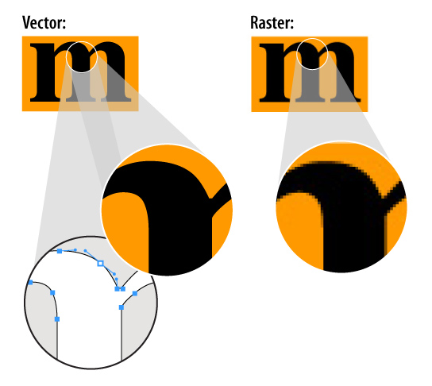

Overview
Vector Graphics are computer images composed of lines made by mathematical formulas. These lines are connected by two-dimensional points to form a variety of shapes. Each point has a definite position on the x and y-axis of the work plane. Because the lines are made from mathematical formulas, vector graphics will not lose image quality when scaled to any size. Vector graphics were first used in computer displays during the 1960s and '70s because the memory needed to display raster graphics were too expensive. Raster graphics could be said to be the opposite of vector graphics. Raster graphics are made up of tiny squares called pixels. After a raster graphic is created at a certain size, scaling it would result in loss of the image quality. By the 1980s raster graphics had taken the place of vector graphics. But vector graphics made a comeback. Graphic designers needed to be able to create graphics that could be scaled down to a logo or up to a poster. Adobe Illustrator is widely recognized and used for creating vector graphics. Vector graphics popularity led to the World Wide Web Consortium to create a new graphics language called scalable vector graphics. An example of SVG used today is in applications to make maps that are scalable and interactive. Modern vector graphic displays could be found at a laser light show where a beam would draw shapes as strokes on a screen. Today, many graphic designers use applications like Illustrator to create vector logos, art, and animations. Often vector paths will be used alongside raster images to create precise lines and curves. Most image editing programs like photoshop contain a vector pen tool that allows you to create precise lines and curves. These lines and curves are technically known as bezier curves. Difference between vector and raster graphics.
| Looses quality | Made of pixels | Picture from camera | Company logo | Lines made from formulas | |
|---|---|---|---|---|---|
| Raster Graphics | X | X | X | X | |
| Vector Graphics | X | X |